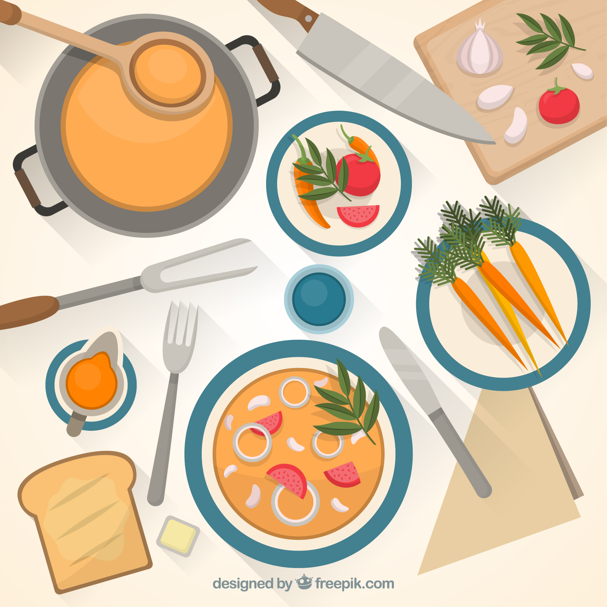

<!DOCTYPE html>
<html>
<head>
	 <meta charset="UTF-8">
    <title>INNER CITY</title>
    
 <link rel="stylesheet" href="css/style.css">
 <link href="https://fonts.googleapis.com/css?family=Amatic+SC|Cinzel|Satisfy" rel="stylesheet">
 <link href="https://fonts.googleapis.com/css?family=Amatic+SC" rel="stylesheet">
 <link rel="stylesheet" type="text/css" href="Jstyle.css">

  <script type="text/javascript" src="js/index.js"></script>
  <script type="text/javascript" src="jquery-3.1.0min.js"></script>
 
</head>

<canvas id="canvas"></canvas>

<body>

<footer class="page-footer">

         <div style= "padding:50px" class="container">
         

            <div class="row">
              <div class="col l6 s12">
                <p class="grey-text text-lighten-4"> 

Mary decides to cook a nice meal. 

As she takes her time to make a delicious meal her stress levels decrease. Happily she turns on her television and starts watching the travel channel. The commercials with friends hanging out and the pictures of beautiful pools make her suddenly want to see her friends and also go on vacation. What should Mary do?

</p>
              </div>
              <div class="col l4 offset-l2 s12">
                
                <ul>
                  <p><a class="grey-text text-lighten-3" href="callafriend1.html">Call a friend.</a></p>
                  <p><a class="grey-text text-lighten-3" href="vacation1.html">Look at vacation spots.</a></p>
                 
                </ul>
              </div>
            </div>
          </div>
          <div class="footer-copyright">
            <div class="container">
            </div>
          </div>
        </footer>


<script src='http://cdnjs.cloudflare.com/ajax/libs/jquery/2.1.3/jquery.min.js'></script>
<script src="js/index.js"></script>
        
</body>
</html>